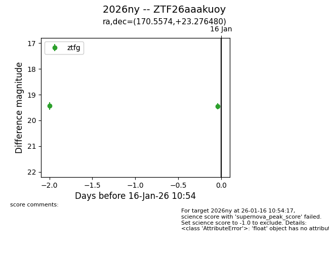
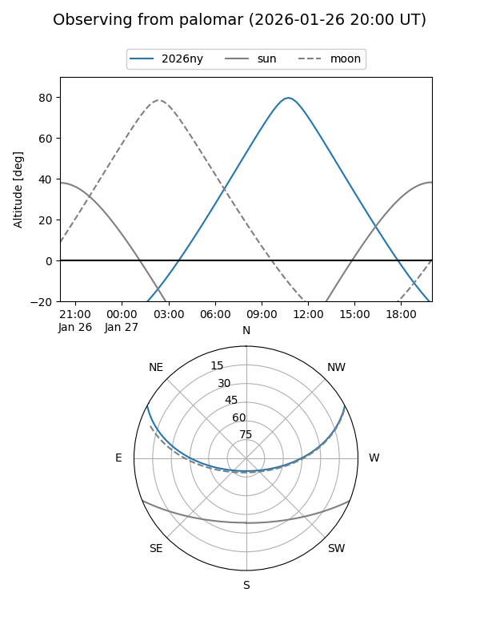
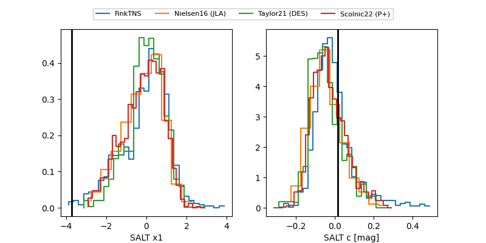

2026ny
Target 2026ny at 2026-01-18 09:00
Aliases and brokers:
FINK: link
Lasair: link
ALeRCE: link
TNS: link
YSE: link
alt names
ZTF26aaakuoy (ztf,fink_ztf)
2026ny (tns,yse)
Coordinates:
equatorial (ra, dec) = 170.5574,+23.27648
equatorial (HMS+DMS) = 11:22:13.78,+23:16:35.33
galactic (l, b) = (218.8023,+69.48578)
Flags:
Photometry:
last ztfg=19.46, ztfr=19.44
2 ztfg, 2 ztfr detections
Lightcurve

Visibility


Additional plots
